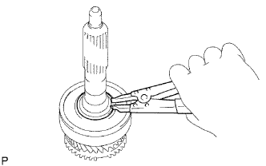
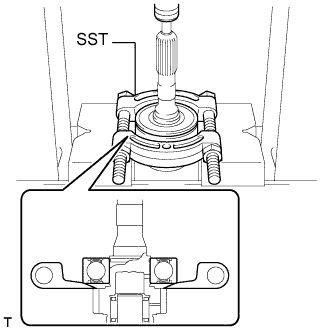

ПЕРВИЧНЫЙ ВАЛ > РАЗБОРКА |
| 1. СНИМИТЕ БЛОКИРУЮЩЕЕ КОЛЬЦО СИНХРОНИЗАТОРА № 2 |
Снимите блокирующее кольцо синхронизатора с первичного вала.
| 2. СНИМИТЕ ПОДШИПНИК ПЕРВИЧНОГО ВАЛА |
Снимите подшипник с первичного вала.
| 3. СНИМИТЕ ПРУЖИННОЕ СТОПОРНОЕ КОЛЬЦО ВАЛА ПЕРЕДНЕГО ПОДШИПНИКА |
|  |
С помощью съемника стопорных колец снимите пружинное стопорное кольцо с первичного вала.
| 4. СНИМИТЕ ПЕРЕДНИЙ ПОДШИПНИК ПЕРВИЧНОГО ВАЛА |
|  |
С помощью SST и пресса снимите передний подшипник с первичного вала.